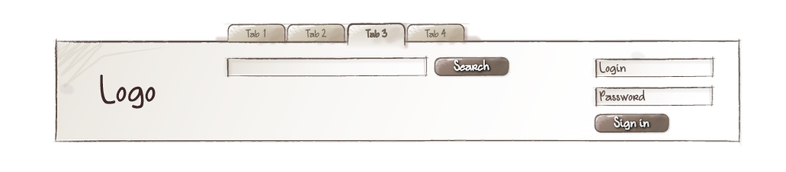
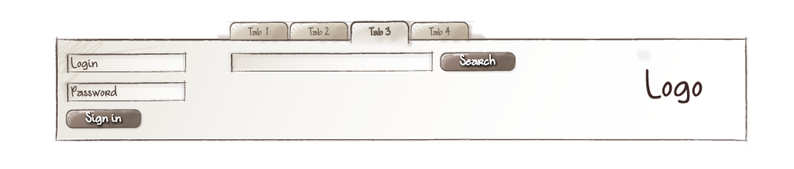

Блок

Белицкий Дмитрий, Яндекс
19 марта 2015 г.,
Начало в 17:00
Белицкий Дмитрий,
Разработчик интерфейсов, служба разработки БЭМ
Белицкий Дмитрий
Разработчик интерфейсов, служба разработки БЭМ
dmtry@yandex-team.ru
@dabelitsky
github.com/dab
gulpopen-source компоненты от Яндекс, создание собственной темы
 


Вопросы?
Всем БЭМ